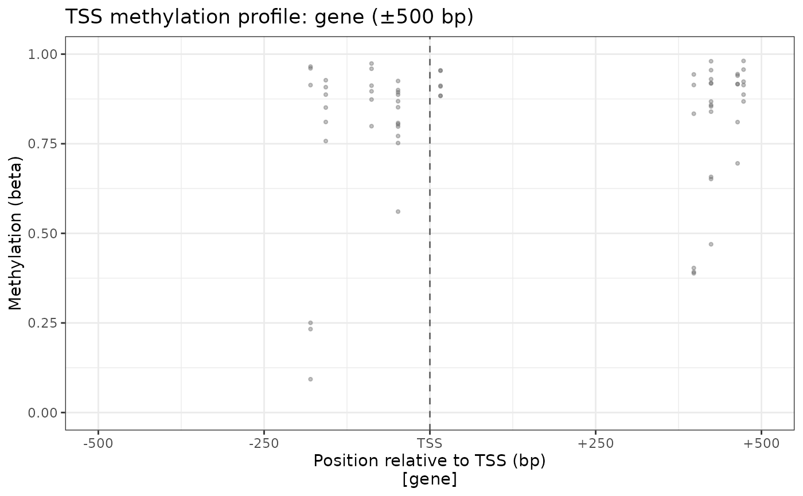
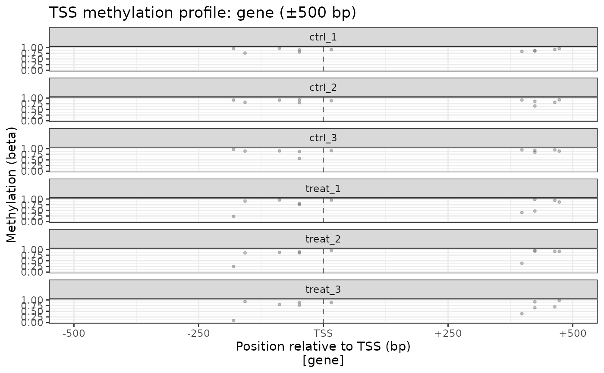
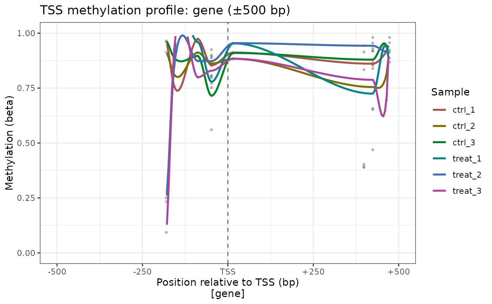

Plots individual methylation sites at their absolute base-pair position relative to the nearest transcription start site (TSS), showing the raw spatial distribution of methylation around gene starts. Optionally colours sites by regulatory feature overlap (e.g., sigma factor binding sites, \(-10\)/\(-35\) elements, transcription factor binding sites).
Usage
plot_tss_profile(
object,
feature_type = "gene",
window = 500L,
regulatory_feature_types = NULL,
mod_type = NULL,
motif = NULL,
mod_context = NULL,
color_by = c("sample", "regulatory_element", "mod_type", "mod_context", "none"),
facet_by = c("none", "sample", "mod_type", "mod_context"),
alpha = 0.4,
show_smooth = FALSE,
smooth_span = 0.3
)Arguments
- object
A
commaDataobject with a non-emptyannotationslot.- feature_type
Character string specifying the feature type whose start coordinate defines the TSS (e.g.,
"gene","CDS"). Must match a value in thefeature_typemetadata column ofannotation(object). Default"gene".- window
Positive integer. Half-window size in base pairs around the TSS. Sites beyond
windowbp upstream or downstream of every TSS are excluded. Default500L.- regulatory_feature_types
Character vector or
NULL. Feature types fromannotation(object)used to label sites whencolor_by = "regulatory_element"(e.g.,c("sigma_binding", "promoter_-10", "promoter_-35", "TF_binding")). Required whencolor_by = "regulatory_element"; ignored otherwise.- mod_type
Character string or
NULL. If provided, only sites of the specified modification type (e.g.,"6mA","5mC") are included.- motif
Character vector or
NULL. If provided, only sites with the specified sequence motif(s) are included.- mod_context
Character vector or
NULL. If provided, only sites whosemod_contextrowData column matches one of the supplied values are included. IfNULL(default), all modification contexts are included.- color_by
Character string controlling the colour aesthetic:
"sample"One colour per sample (default).
"regulatory_element"Sites coloured by the first regulatory feature they overlap (from
regulatory_feature_types); sites with no overlap are labelled"None"and shown in grey. Requiresregulatory_feature_types."mod_type"One colour per modification type.
"mod_context"One colour per modification context.
"none"No colour mapping; all points drawn in the default colour. Useful when
facet_byprovides sufficient grouping.
- facet_by
Character string controlling optional faceting:
"none"(default),"sample","mod_type", or"mod_context".- alpha
Numeric in \((0, 1]\). Point transparency. Default
0.4.- show_smooth
Logical. If
TRUE, a loess smoothing line is overlaid per colour group. DefaultFALSE.- smooth_span
Numeric in \((0, 1]\). Loess span parameter passed to
loess. Default0.3.
Value
A ggplot object. The x-axis shows signed
position relative to the TSS in base pairs; the y-axis shows methylation
beta value (0–1). A dashed vertical line marks the TSS at x = 0.
Details
Unlike plot_metagene, which normalises positions to
\([0, 1]\) and averages across sites, plot_tss_profile shows
every individual site at its exact signed base-pair distance from the
nearest TSS (negative = upstream, positive = downstream). This preserves
the absolute spacing of promoter elements relative to the start of
transcription.
Internally calls annotateSites(keep = "proximity") to
compute signed TSS distances. Strand awareness follows the same
convention: for + strand features, position 0 is the lowest
coordinate; for - strand features, position 0 is the highest
coordinate (the biological TSS). When a site is within window bp
of multiple TSS features, only the nearest (by absolute distance) is used.
If color_by = "regulatory_element" and none of the specified
regulatory_feature_types are found in annotation(object),
the function issues a message and falls back to color_by = "sample"
so the plot still renders.
Examples
data(comma_example_data)
plot_tss_profile(comma_example_data, feature_type = "gene", window = 500L)
#> Ignoring unknown labels:
#> • colour : "Sample"
#> Warning: Ignoring empty aesthetic: `colour`.

# Colour by modification type, facet by sample
plot_tss_profile(comma_example_data, feature_type = "gene",
color_by = "mod_type", facet_by = "sample")
#> Ignoring unknown labels:
#> • colour : "Modification type"
#> Warning: Ignoring empty aesthetic: `colour`.

# Overlay loess smooth
plot_tss_profile(comma_example_data, feature_type = "gene",
show_smooth = TRUE)
#> Warning: LOESS smooth for group(s) 'ctrl_1', 'ctrl_2', 'ctrl_3', 'treat_1', 'treat_2', 'treat_3' encountered numerical instability; the smooth may be unreliable. Consider adjusting smooth_span or increasing data density near this feature.
#> Warning: Ignoring empty aesthetic: `colour`.
#> Warning: Removed 420 rows containing missing values or values outside the scale range
#> (`geom_line()`).
